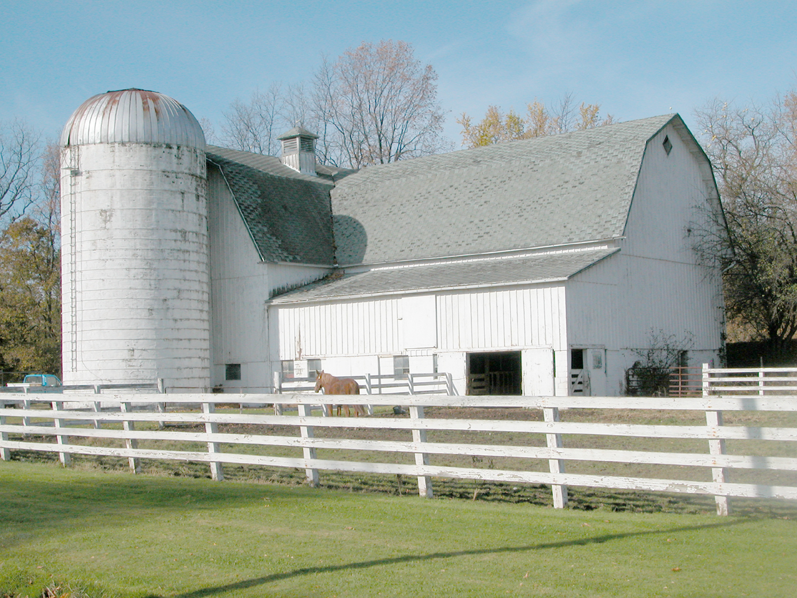

Hobby Farms are springing up all over the country. One of the questions would then be how to profit from a farm such as this? You have several different options as to how best to accomplish this. You need to know the right soil types for the type of farm that you have, as well as what crops you can grow. You also need to decide if this is going to be a poultry or goat hobby farm. Maintaining the land and water goes along with this. You also need to be able to know how to market your hobby farm.
The Hobby Farm business
On the business side of hobby farming you have to know what you can profit from before you even get started. Some things will profit more than others. Climate, competition, labor requirements, buildings, water, regulations and permits as well as access to water are all going to play important factors in the final decision. One idea would be not to specialize in any one market. Diversity is the key to making a profit from your hobby farm. It will take experimentation to find the right fit for your hobby farm to become profitable.
Hobby Farming is small scale farming which can be done for fun or it can be done to provide an income for a family. Personally, I am doing it on a income basis to supplement what my husband earns so I can continue to take my classes. It is hard word but very rewarding in the end. There is many areas on a Hobby Farm that need to be addressed for those who are just starting out. Here are a few questions that can be asked before deciding to add a hobby farm to your lifestyle.
How much land is needed for a hobby farm is really an individual decision. It depends on how much time you want to invest in it. If you want to buy a home with a large backyard to set up your hobby farm in then it will not cost as much as buying a 1000 acres of land. The best option is to compare houses with land in the size you wish to start out with.
What Equipment is needed for a Hobby Farm?
Having the right equipment is essential for any job or hobby. Many people start out small and increase the size of the farm over time. This means having the right equipment for the chores on the hobby farm.
Pickup truck
Utility vehicle/Compact tractor
Livestock trailer
Carpenter's Tools
Which types of Plants or Animals exist?
Any kind you can eat or sell would be the first place to get ideas on what to kind of plants to get. As for the animals, it depends on the size of your hobby farm. You could add a few chickens for meat and eggs or you can add cows , heirloom vegetables, game birds, goats, essential oils, farmhouse cheese and wine for example. This is just a short listing of what can be profitable niches for your hobby farm. Be aware however, that fads are just that, fads. They do not help you with profitability from your hobby farm. Non-domesticated animals can be a fad. There is a good reason why they are not domesticated and you should stay away from all fad farming. The money simply is not there.
for milk and meat too. There are many hobby farmers that raise goats, sheep, poultry, and rabbits too.
Being self sustainableis one idea that starks interest in most hobby farmers. We can live off the grid but still have all the comforts of living on the grid too. Figuring a happy medium is the trick to it. My Hobby Farm blog site, Sunnyside Lane Hobby Farm we talk about many of the day to day happenings on the farm as well as help to teach you other things about the hobby farm lifestyle in the USA country side.
Images
An old dairy farm has become a hobby farm near Leicester, New YorkSheep and cow in South Africa.Honda TillerLivestock trailer hauling goats
 , heirloom vegetables, game birds, goats, essential oils, farmhouse cheese and wine for example. This is just a short listing of what can be profitable niches for your hobby farm. Be aware however, that fads are just that, fads. They do not help you with profitability from your hobby farm. Non-domesticated animals can be a fad. There is a good reason why they are not domesticated and you should stay away from all fad farming. The money simply is not there.
, heirloom vegetables, game birds, goats, essential oils, farmhouse cheese and wine for example. This is just a short listing of what can be profitable niches for your hobby farm. Be aware however, that fads are just that, fads. They do not help you with profitability from your hobby farm. Non-domesticated animals can be a fad. There is a good reason why they are not domesticated and you should stay away from all fad farming. The money simply is not there.